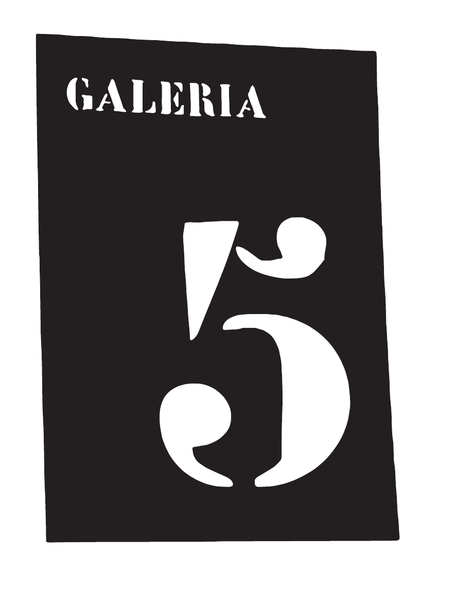

IMAGEN
DE CALLE
DE CALLE

MUSEO DISTRIBUIDO DEL ARTE CALLEJERO · BARCELONA
La Quinta Galería de La Modelo alojaba a los presos considerados más peligrosos. La 5a Galeria documenta otra clase de peligrosidad: la que aparece en la calle, persiste, incomoda y no pide permiso.
FUCK
METACRILATO.
DECLARACIÓN INSTITUCIONAL / 001
5a Galeria no organiza exposiciones. Reconoce, documenta y archiva las que ya existen en el espacio público.
La ciudad es la sala. El muro es el soporte. La desaparición forma parte de la historia.
01 / ARCHIVO
La calle desaparece.
El archivo queda.
Los expedientes de esta primera versión son marcadores de estructura. El archivo real se alimentará con fotografías enviadas desde la calle.
02 / CERTIFICACIÓN
Bareback Street Art Certification
Sistema de clasificación del grado de domesticación del arte callejero. Certificación no reconocida por ninguna autoridad competente.
Puro muro sin domesticar.
La calle aún muerde.
Rebeldía homologada.
Gentrificación con spray premium.
Simulación de calle.
Este sistema no evalúa calidad estética. Evalúa grado de domesticación.
03 / MAPA
PRÓXIMAMENTE · MAPA PÚBLICO DE OBRAS ACTUALES Y DESAPARECIDAS
04 / PREMIS
El índice anual del arte callejero vivo.
No se premia la mejor obra. Se premia la presencia, la persistencia, el riesgo simbólico y la capacidad de existir en la calle aunque el algoritmo no quiera.
05 / PARTICIPA
Sube la prueba. No necesitamos tu portfolio. Necesitamos la calle.
RECEPCIÓN ABIERTA
5a GALERIA / BARCELONA / ARCHIVO VIVO
FUCK METACRILATO.